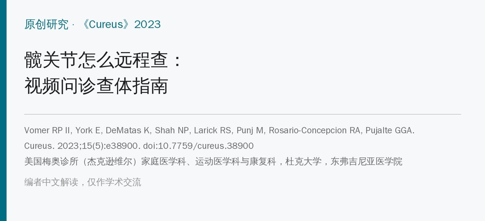
🔖原文信息（编者中文重排）
📚 文献信息
▪ Vomer RP II, York E, DeMatas K, Shah NP, Larick RS, Punj M, Rosario-Concepcion RA, Pujalte GGA. Telemedicine evaluation of hip ailments. Cureus. 2023;15(5):e38900. doi:10.7759/cureus.38900
▪ 作者单位：美国梅奥诊所（杰克逊维尔）家庭医学科、运动医学科与康复科，杜克大学，东弗吉尼亚医学院
▪ 文章类型：期刊归为原创研究，实际是作者经验整理的操作指南（示范模特是第一作者本人，没有验证数据）。和上一篇肘关节远程评估出自同一团队
• 远程查髋包括视诊、自我触诊、活动度、特殊检查、功能和步态，大部分信息都能通过视频拿到
• 按体位排顺序：站 → 坐 → 站 → 仰卧 → 俯卧 → 坐，既减少折腾，变换体位本身也能看出髋痛对功能的影响
• 髋痛常常来自腰椎、骶髂关节、腹股沟和腹盆腔，远程查髋要一起排查
• 出现不能负重、红肿发热、夜间痛、大小便失禁等情况，不要停留在远程
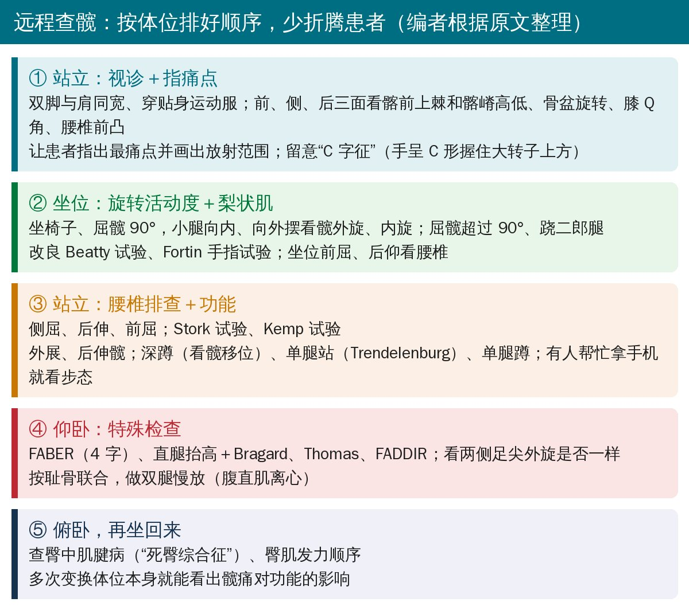
🔖远程查髋的体位顺序（编者根据原文整理）
• 让患者双脚与肩同宽站立，最好穿贴身的运动服；从前、侧、后三面看
• 前后面：髂前上棘、髂嵴是否等高，骨盆有无旋转；估计膝 Q 角，过大或过小会改变下肢动力链的受力，也可能引起髋痛
• 侧面：腰椎前凸多少，有无“摇摆背”
• 让患者指出最痛点，再用手指画出放射范围；留意经典的“C 字征”：手呈 C 形握在大转子上方
• 看有无发红、肿胀、明显畸形；有家人朋友在旁边，就请他们拿手机拍步态
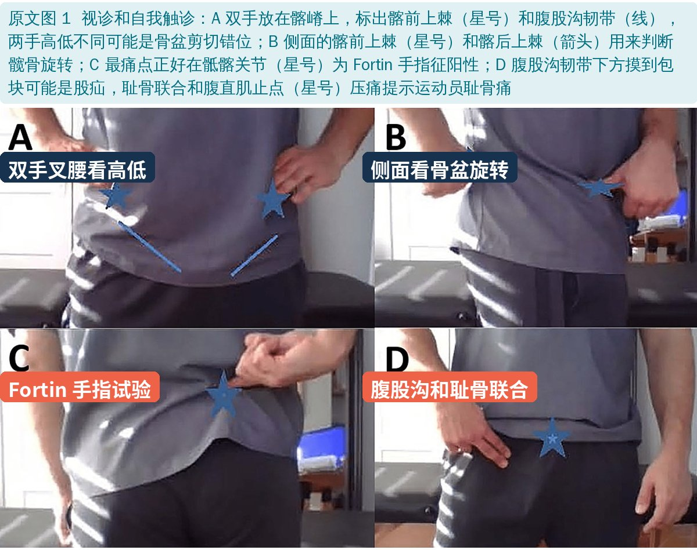
🔖原文图 1：视诊和自我触诊
• 让患者按髂前上棘、髂后上棘、阔筋膜张肌、耻骨联合、坐骨结节、大转子，看哪里痛
• 从髂嵴顶部开始，手沿顺时针方向逐个按各标志点
• 再让患者说说大腿前侧、髋内侧、臀部的肌肉松紧、皮温和感觉
髋的活动度要左右对比，并且同时查腰椎。
• 坐椅子、屈髋 90°，小腿向内、向外摆，看髋外旋、内旋时痛不痛（注意方向：足向外摆是髋内旋）
• 同一姿势屈髋超过 90°，痛吗？能跷二郎腿吗？跷上去让上面的膝往外倒，痛吗？
• 站立：向侧面抬腿估外展，向后伸腿估后伸
• 腰椎：坐位前屈摸脚尖、后仰，从侧面估角度；侧屈和旋转从后面看
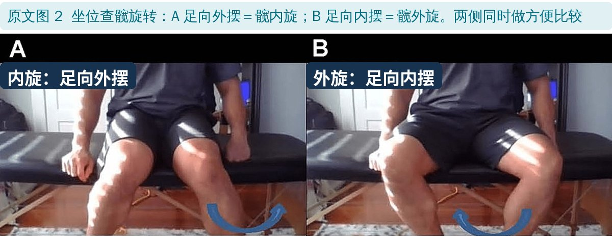
🔖原文图 2：坐位查髋旋转
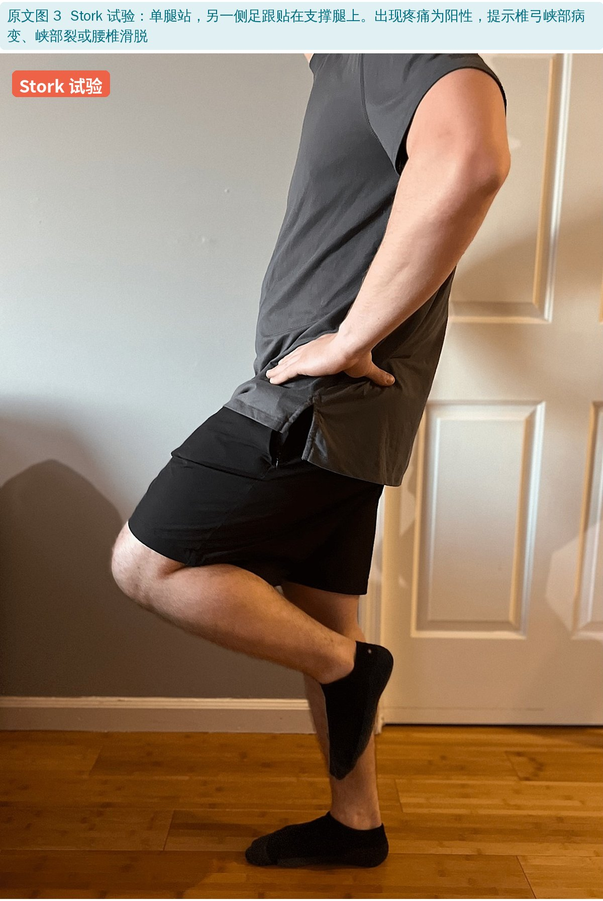
🔖原文图 3：Stork 试验
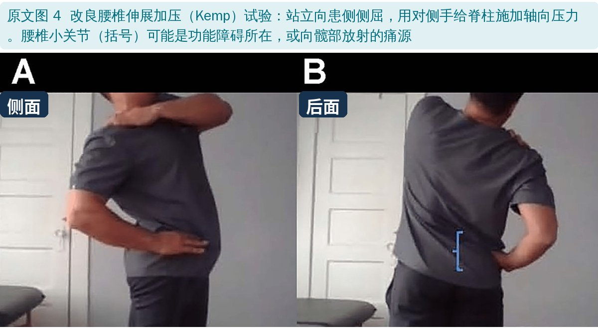
🔖原文图 4：改良 Kemp 试验
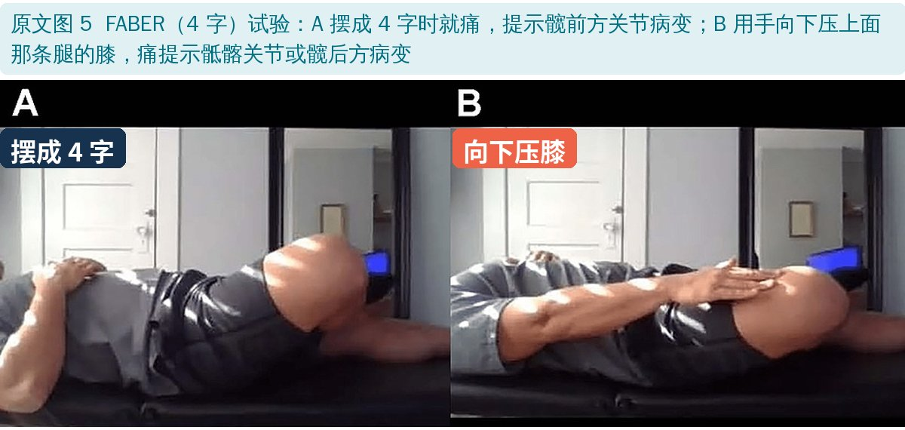
🔖原文图 5：FABER（4 字）试验
• FABER：一开始摆 4 字就痛 → 髋前方；往下压才痛 → 髋后方或骶髂关节；骶髂关节处痛 → 骶髂功能障碍或骶髂炎；腹股沟痛 → 髂腰肌拉伤、撞击、盂唇撕裂、软骨损伤或骨关节炎
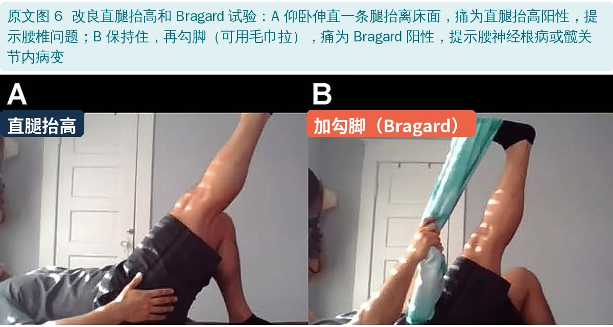
🔖原文图 6：改良直腿抬高和 Bragard 试验
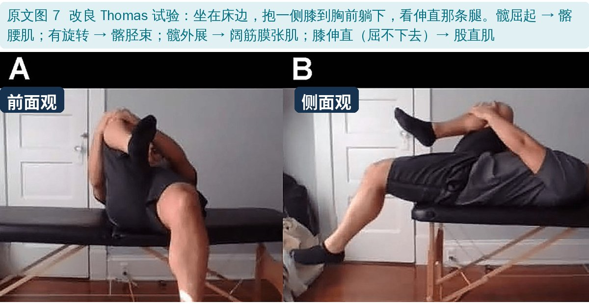
🔖原文图 7：改良 Thomas 试验
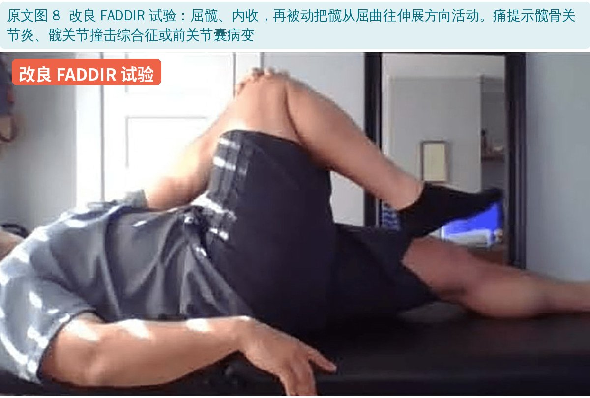
🔖原文图 8：改良 FADDIR 试验
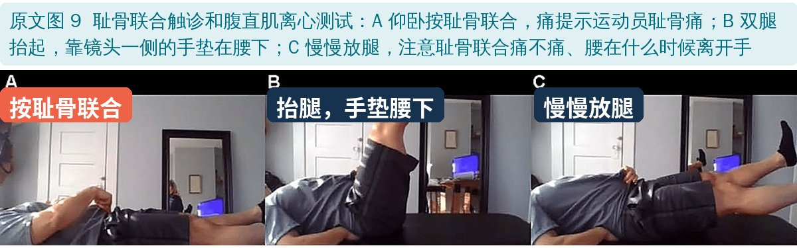
🔖原文图 9：耻骨联合触诊和腹直肌离心测试
• 仰卧伸直双腿，看两侧足尖外旋是否一样：差别大提示髋稳定肌无力、过度活动或髋骨功能障碍
• 双腿慢放时，腰过早离开垫在下面的手，提示腹直肌下部或脊柱稳定肌无力
• 改良 Beatty 试验：坐位跷二郎腿（患腿在上），再向前弯腰，复现疼痛提示梨状肌综合征
• Fortin 手指试验：最痛点正好在骶髂关节（髂后上棘下方的小窝附近），提示骶髂关节问题
• 俯卧：查臀中肌腱病（“死臀综合征”）和臀肌发力顺序（原文没有给具体做法）
• 徒手深蹲：从侧面和后面看。能抗重力完成，下肢肌力至少 3 级
• 髋移位：从后面看深蹲，骨盆偏向一侧，提示一侧髋活动度或力量不足（原文正文和图注对偏向哪侧说法相反，见文末）
• 单腿站：看 Trendelenburg 征——对侧骨盆下沉，说明支撑腿臀中肌无力
• 单腿蹲：看髋无力、动态膝外翻，以及是否疼痛
• 步态：看站宽、支撑时间和步长；视频里能看到 Trendelenburg 步态、划圈步态、跨阈步态和减痛步态
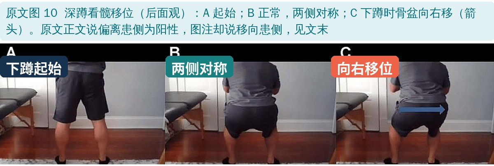
🔖原文图 10：深蹲看髋移位
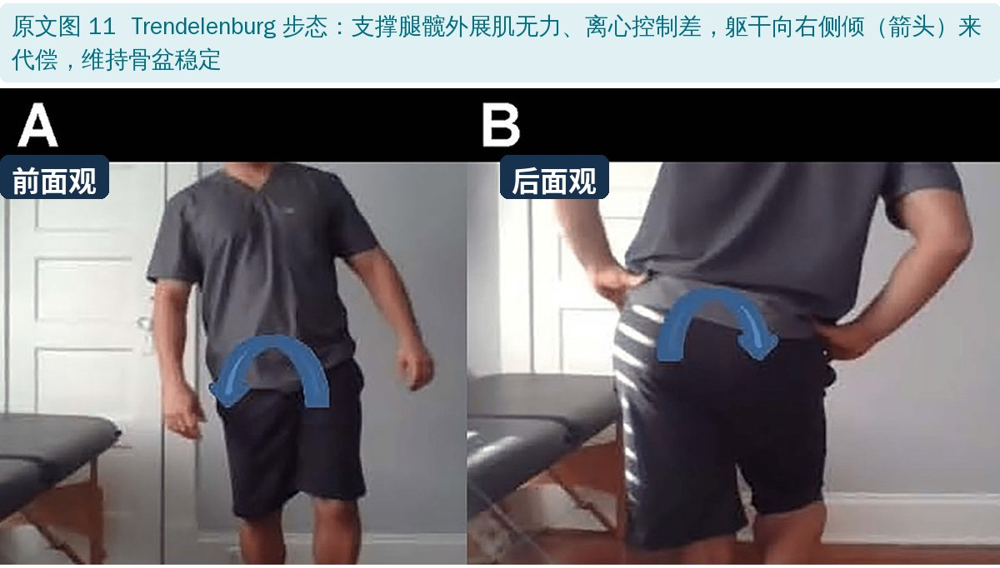
🔖原文图 11：Trendelenburg 步态
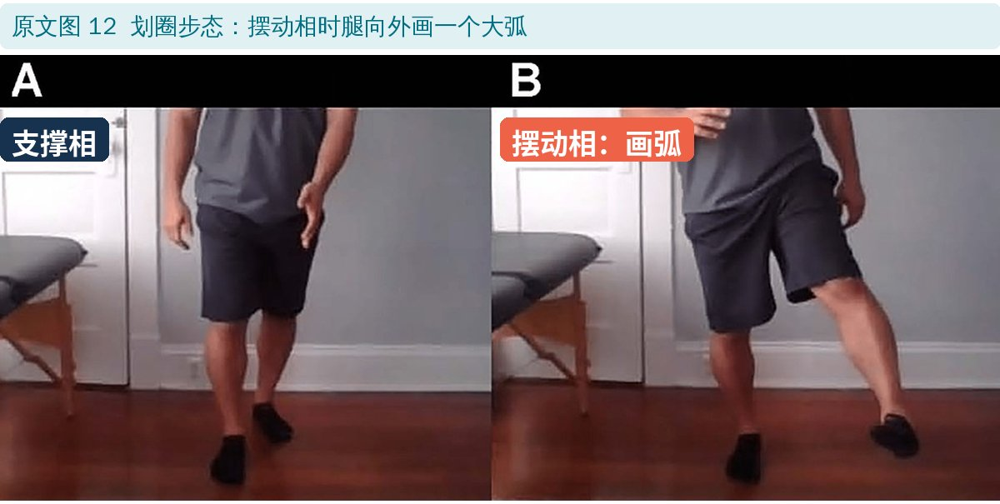
🔖原文图 12：划圈步态
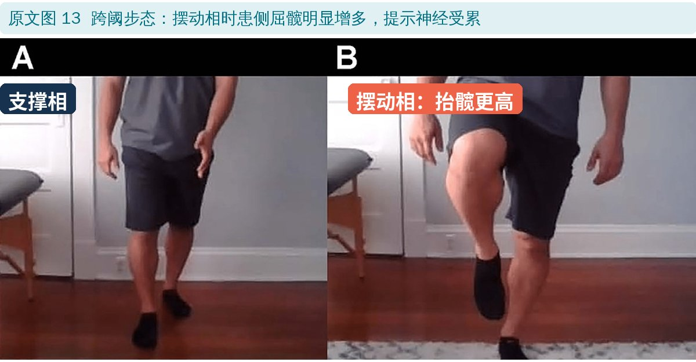
🔖原文图 13：跨阈步态
原文表 1～3 把每一项检查都改写成了患者能听懂的问题。编者按原表整理成三张卡（第三张合并了讨论部分的红旗）：
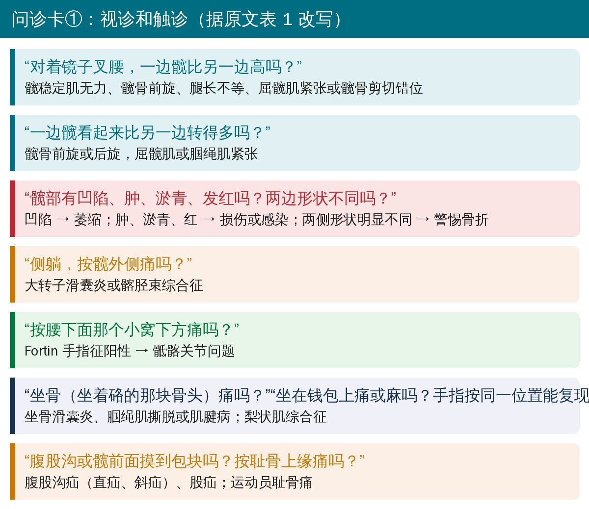
🔖问诊卡①：视诊和触诊（据原文表 1 改写）
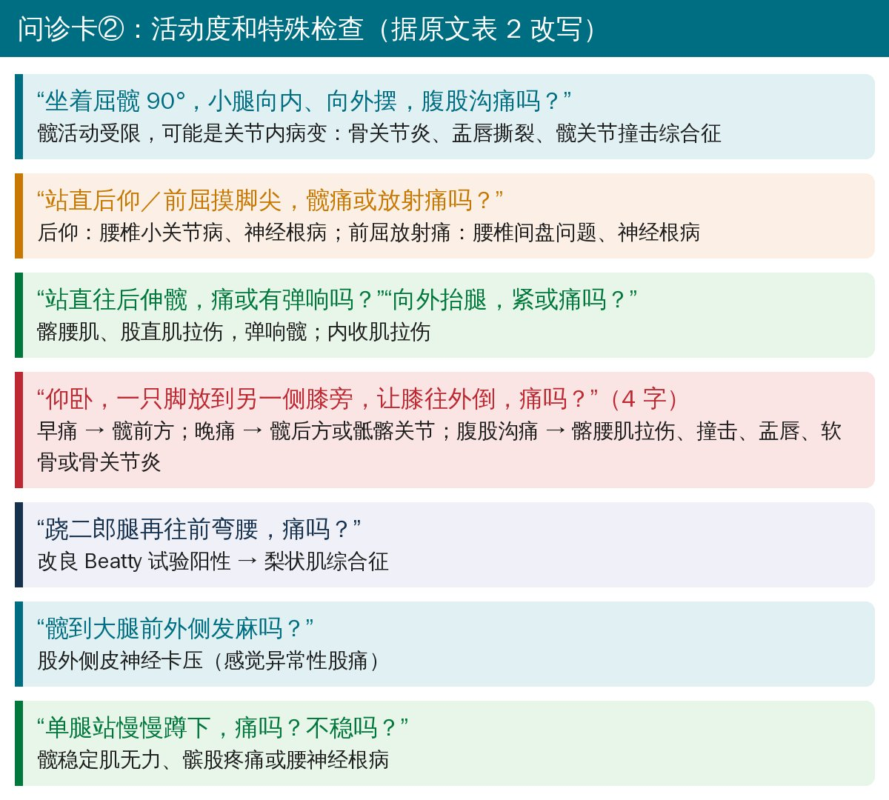
🔖问诊卡②：活动度和特殊检查（据原文表 2 改写）
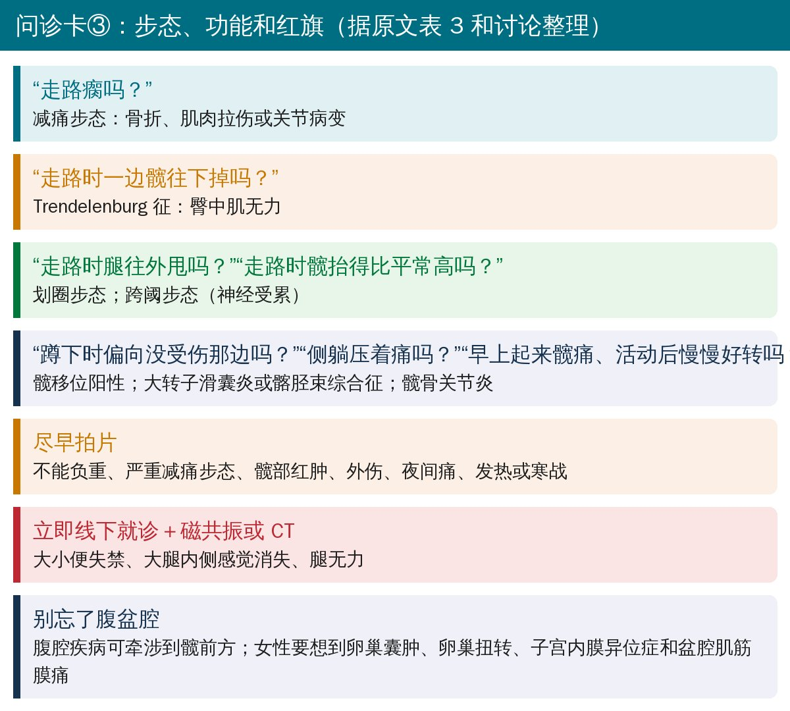
🔖问诊卡③：步态、功能和红旗（据原文表 3 和讨论整理）
• 尽早拍片：不能负重、严重减痛步态、髋部红肿、外伤、夜间痛、发热或寒战伴髋痛
• 立即线下就诊并做磁共振或 CT：大小便失禁、大腿内侧感觉消失、腿无力
• 髋前方痛要想到腹腔疾病的牵涉痛；女性还要考虑卵巢囊肿、卵巢扭转、子宫内膜异位症、盆腔肌筋膜痛
• 设备和沟通：双方都要有稳定网络和带摄像头的设备，平台要符合隐私保护要求；有语言障碍时一定要用医疗翻译
• 期刊归为原创研究，但没有受试者也没有数据；所有远程检查都没做过信度、效度验证
• 作者自己承认：患者自己做的动作可能不如专业人员准确；活动严重受限的患者有些动作做不了；严重损伤时远程评估可能延误就医
• 优点：按体位排好了检查顺序，覆盖腰椎、骶髂、腹股沟等髋痛常见来源，问题可以直接拿来用
• 髋移位往哪边偏，说法相反：正文说“偏离患侧”为阳性，表 3 也问“是否偏向没受伤那一侧”；图 10 图注却说“患者会移向患侧”
• 划圈步态的原因两处不一样：图 12 说提示髋内收肌张力高；表 3 说是髋膝屈肌或踝背屈肌无力和痉挛。通常划圈步态是摆动相屈髋、屈膝或踝背屈不足的代偿，内收肌张力高更常见的是剪刀步态
• 跨阈步态的病因：跨阈步态通常是足下垂（踝背屈无力）的代偿，原文列出的可能病因里有“股骨头骨骺滑脱”，并不典型
• 局限性和正文矛盾：局限性部分说远程“无法做触诊和力量测试”，但正文用了大量篇幅讲患者自我触诊、用深蹲和单腿站测力量
• 图号引错：表 2 的 Kemp 试验写“见图 6”，应为图 4
• Thomas 试验四个观察点对不上：表 2 让患者看“髋屈起、膝伸直、小腿旋转、髋外旋”，结果解释却是“髋外展 → 阔筋膜张肌”，问的和答的不是同一项
• 触诊清单：让患者摸的“骨性突起”里有小转子和梨状肌——小转子在体表摸不到，梨状肌是肌肉不是骨性突起
• FADDIR 少了内旋：图 8 只写了屈曲、内收再被动屈伸，没有内旋，表 2 也只说“屈髋上下活动”
• 伦理声明自相矛盾：写着“梅奥诊所杰克逊维尔院区批准：无需批准”，又说本方案不需要伦理审批
• 视频前提醒患者穿贴身短裤、准备一把椅子和一块能躺的地方，最好有人帮忙拿手机
• 先让患者指出最痛点：腹股沟（关节内）、大转子（外侧）、臀部或骶髂（后方），决定接下来的重点
• 查髋一定连带腰椎和骶髂关节一起排查
• 远程结果只是初筛；有红旗、或者远程看不清时，尽快安排线下查体和影像
欢迎关注骨科康复小黄公众号，获取更多物理治疗的专业知识！
📄参考文献：
Vomer RP II, York E, DeMatas K, Shah NP, Larick RS, Punj M, Rosario-Concepcion RA, Pujalte GGA. Telemedicine evaluation of hip ailments. Cureus. 2023;15(5):e38900. doi:10.7759/cureus.38900
原文以知识共享署名 4.0（CC BY 4.0）协议开放获取。原文图 1～13 引自原文，中文标签为编者所加；流程卡和问诊卡据原文正文、表 1～3 和讨论整理改写。